Making your own Scratch adventure: a guide
Table of Contents
- What you can do
- Planning ahead
- Starting from Scratch
- How do I…
- Other examples
What you can do
Today, we're going to write a story, sort of like that (but not the same – make it about whatever you want! add effects!). We'll use Scratch.
(Actually, that story is written in Scratch, and you can find out how I wrote it by going to its project page on the Scratch website. Click "See Inside"!)
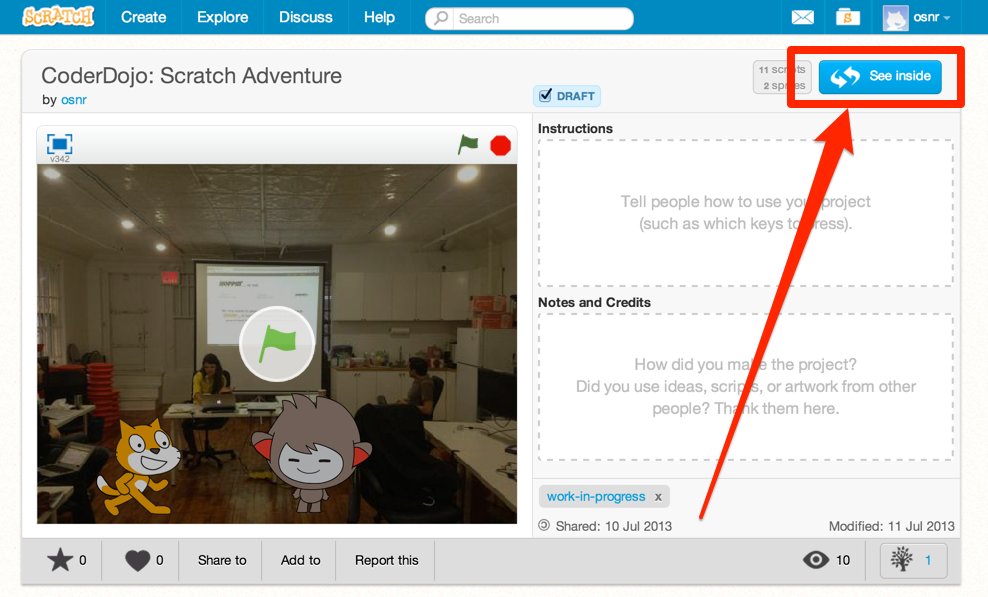
See inside and find out how Scratch projects are made
Planning ahead
Now we'll think about what we want to do, so we have somewhere to start when we start making stuff in Scratch. You should have a worksheet that looks kind of like this:
Plan out what you want to do. We came up with some ideas for ourselves, but I'm sure you'll have even better ones.
CoderDojo story
Remember the Scratch story you saw at the beginning? Here's how we might have planned it out before actually making it:
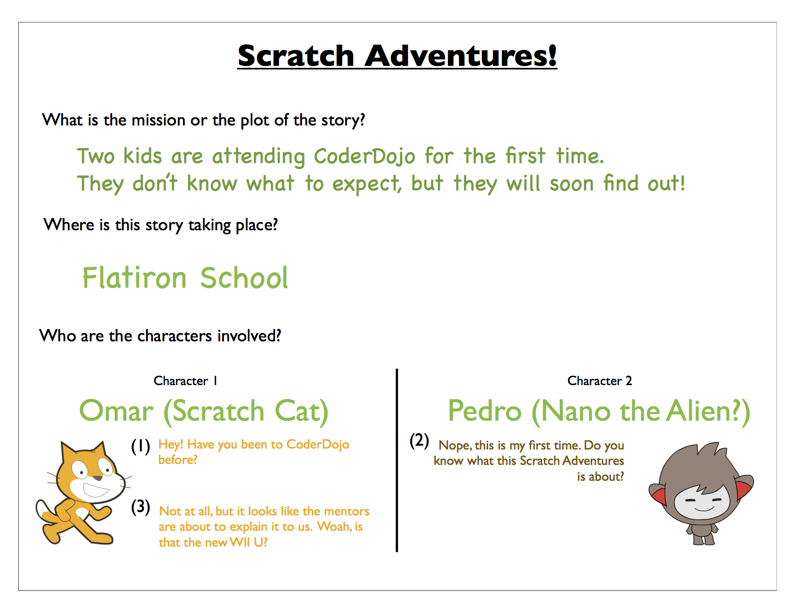
An example of what your idea might look like
Adventure game
Here's another game we made, called Knight vs. Zombies.
Idea
Mission: pick the unicorn and reach out Master Yoda for Enlightment while evading the deadly Zombies
Hero: Knight (Scratch)
Narrator: Parrot (states the mission)
Do not collide against the moving Zombies (moving horizontally back and forth), some are stationary.
Copy & Paste few zombies

Zombies
Result
We used Scratch and went from this idea to a real game: "Knight vs. Zombies"! Take a look at the project page (including Scratch code).
Group discussion
Cool, you have a potential idea.
If you want, share your idea with other people in your group, including your mentor. Maybe someone will like it and want to work with you! Maybe someone will be interested and want to follow your story as you make it.
It can't hurt, even if you end up deciding to go your own way!
Starting from Scratch
Okay. Now that we have some idea of what we might want to make today (feel free to change your idea later, though), let's start making stuff.
Get a Scratch account
We need a Scratch account. (You could start without making a Scratch account, I guess, but then you wouldn't be able to save. And that would be annoying.)
Head to scratch.mit.edu and click "Join Scratch," then follow the three steps. (You might need a parent's e-mail address if you're under 13 – maybe call them over for this part if they're here.)
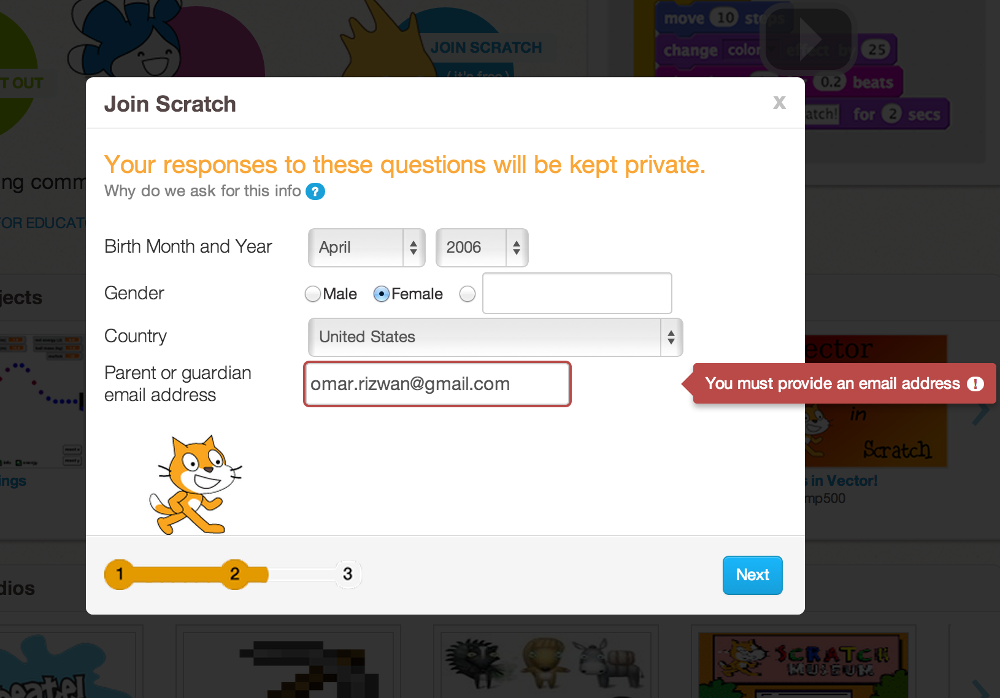
Making an account of my own
Open up Scratch
Okay. Now we can get to the fun part. Open up Scratch itself!
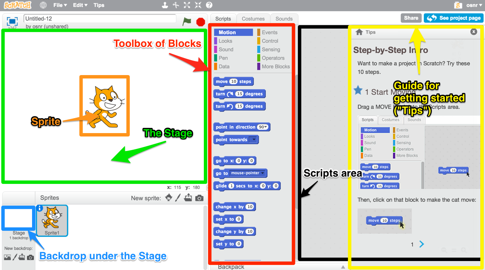
Parts of Scratch. There's a lot to take in.
It has a little guide for getting started – the Tips. If you want, follow those Tips on the right side of the screen, then play around; if not, just X them out and play around right away! Drag some Blocks from the Blocks Toolbox to the Scripts Area (the gray area partly covered by Tips).
I'll give you a couple of minutes to play.
…
…
Well, that was fun. Now what?
Now you can start building your thing! I recommend you start with one scene – just get all the pictures and objects in the right places. But it's totally up to you.
If you don't know how to do something, I have some instructions on how to do stuff. You can also check out some other resources.
How do I…
insert a picture from the Internet as a Sprite?
You'll have to get the picture onto your computer, then feed it back into Scratch so it becomes a Sprite you can use in your story.
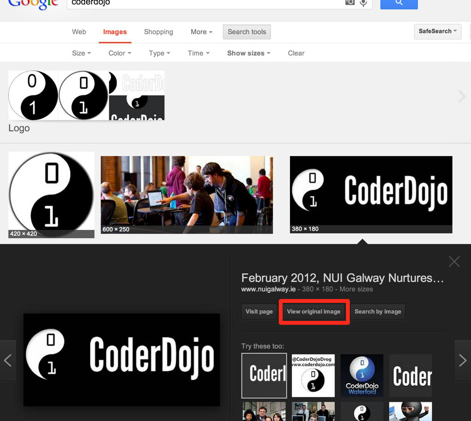
Find it on Google Images first, then open the original.
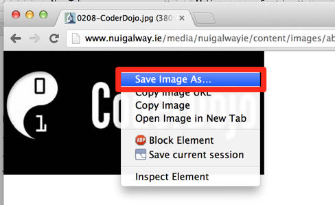
Save the original image to a file somewhere on your computer. (Remember where you put it!)
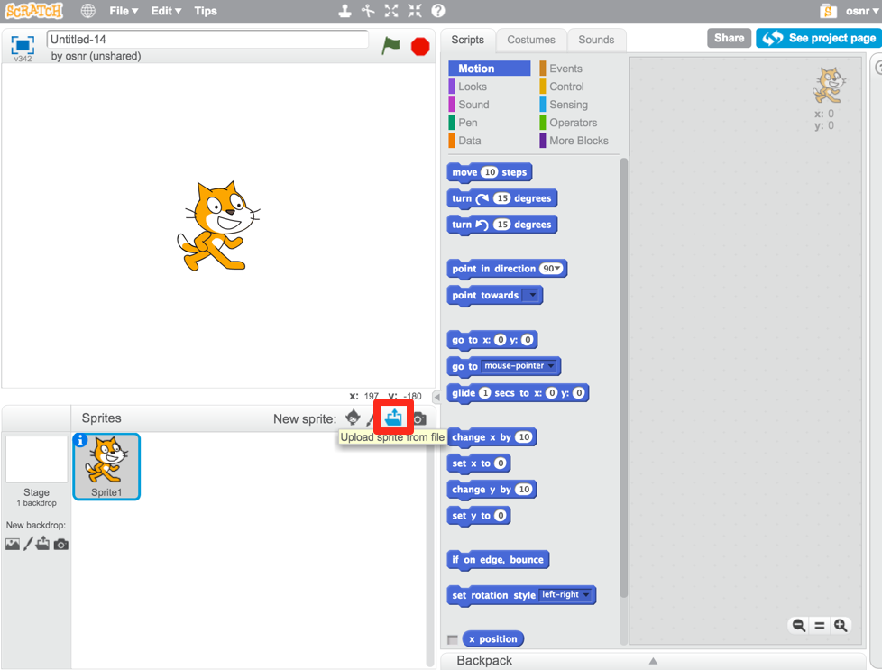
That image you just saved to your computer? Upload it back into Scratch with this button.
You can make as many Sprites as you need and move them around to form your initial scene.
make different things happen over time?
What does that mean?
So far, we've drawn some stuff on the screen. You could just use Paint or Word or something to do that. It looks cool, but we haven't done anything really special yet.
Scratch is more powerful than those because:
- You can make what shows up on the screen animate. (Okay, what's the big deal? You could draw a flipbook or something, too. It's just animation.)
- You can make the changes depend on what the person running your program does. That's what computer programming lets you do, in Scratch and in other languages. Somebody else runs your program, and they don't just get some prewritten result every time. They get to put some input in, and see something different depending on what they put in.
OK. How?
The right side of the screen in Scratch has a toolbox with some Blocks, and a (currently empty) Script Area where you can put those Blocks. The Blocks in the Script Area are your program. They're what Scratch will run, and they can change what shows up on the Stage.
Blocks are like instructions for Scratch to do something to the screen.
Link them to event blocks.
add a song or music I like?
You can pick a built-in sound, record your own, or upload one from your computer.
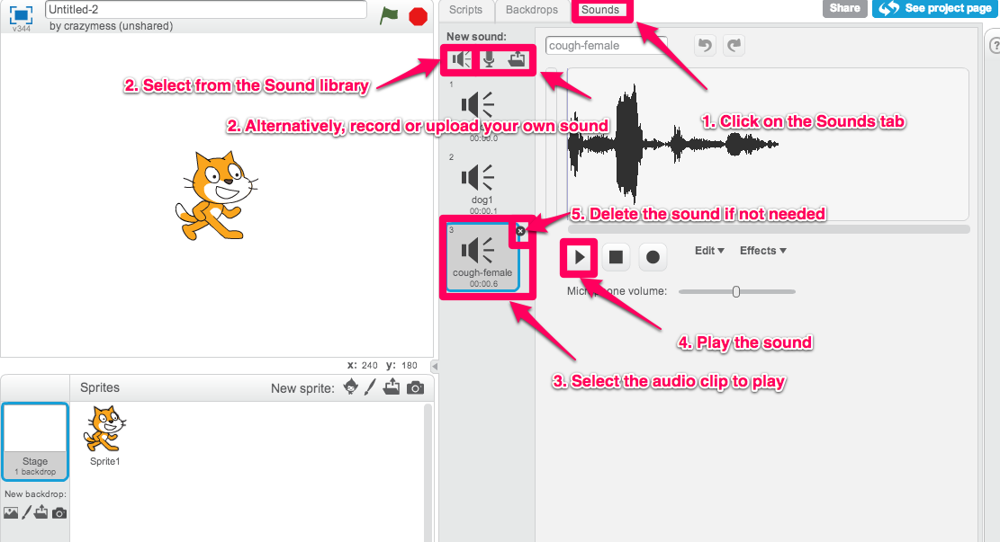
How to add a song
Now that it's part of your project, you can use the Play Sound Block to play it!
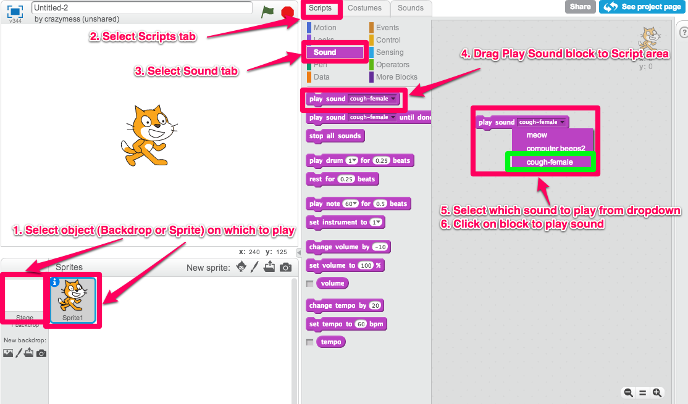
Playing the song
get things (Sprites) to disappear and reappear?
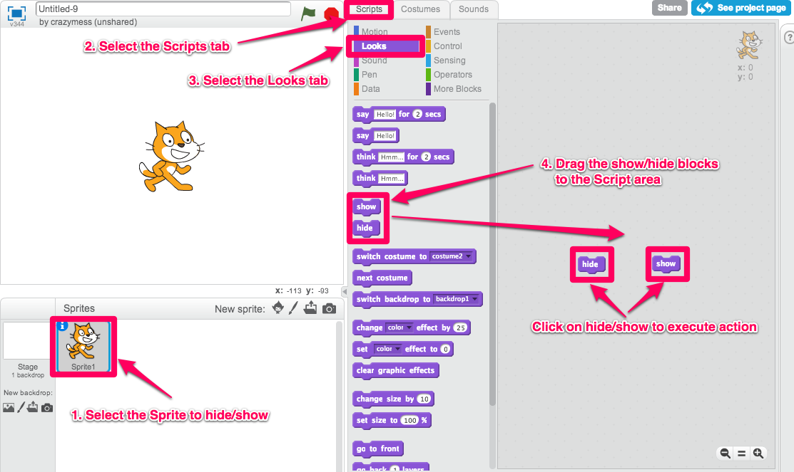
How to hide and show Sprites
make characters talk to each other?
This example is from Pokemon Stories:
- Make sure to have at least two Sprites in your scene.
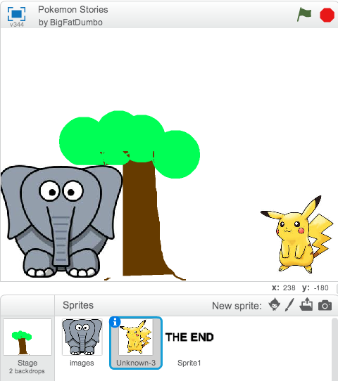
Sprites for Elephant and Pikachu
- Select the Elephant Sprite and add alternating "Say" and "Wait" Blocks.
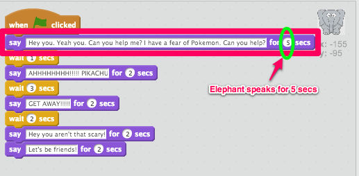
Elephant's Script
- Select the Pikachu Sprite and alternate the Wait and Say Blocks with delays matching the Elephant's.
In the first step, the Elephant "says" for 5 seconds (Hence, Pikka wait for 5 seconds), and so on.

Pikachu's Script
change the background?
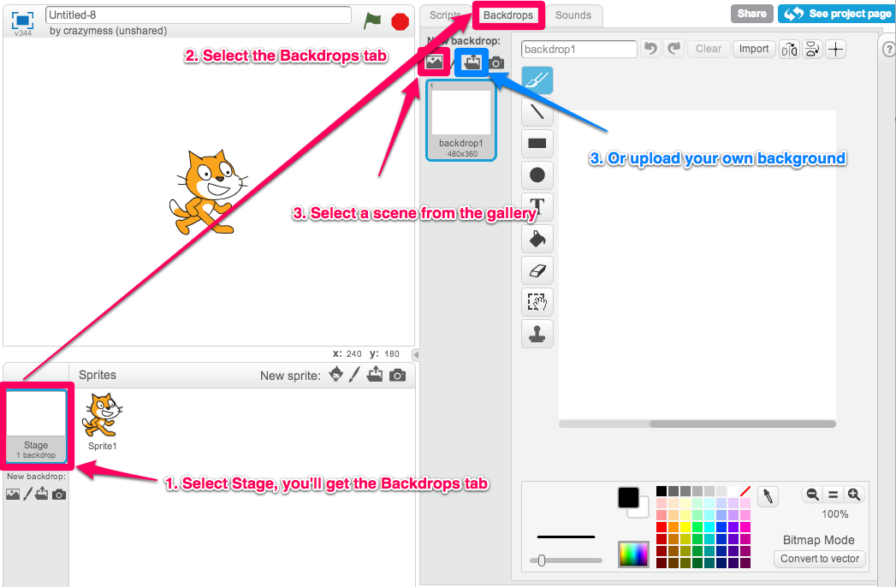
How to customize the background image in a backdrop
move between different scenes?
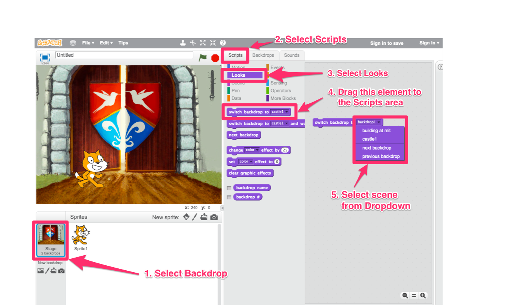
How to change between different backdrops
do something not listed here?
Try things in this order if you get stuck or can't figure something out.
- Find it online. There are a bunch of sites where you can learn how to use Scratch:
- Ask kids near you! Maybe they got stuck on the same problem.
- Ask a mentor!
Other examples
- Pokemon Stories (dialogue using delays)
- Haunted House (longer dialogue using delays)
- Giga's first day, from our mentor Pablo (interacting with key presses)
- Linear story (multiple backdrops)
- Teens at the Castle (dialogue using broadcasting - more advanced)
- Starter Projects